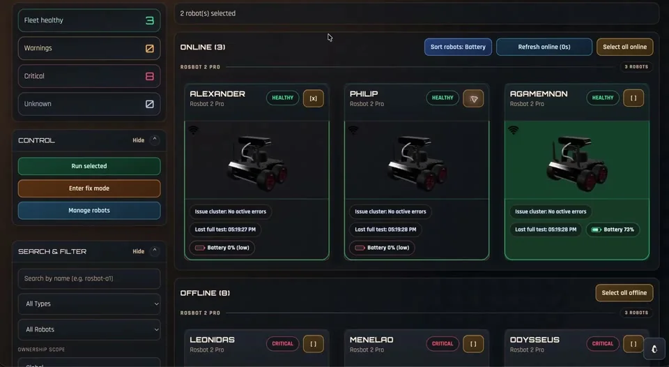

Robotics operations · 2026
VIGIL
Monitor robots, open remote terminals, and run saved diagnostic and recovery workflows.

Fleet operations
Monitor, diagnose, and recover
Monitoring covers connectivity, battery, ROS topics, and runtime activity. Saved workflows make checks and fixes repeatable.
- ObserveBackground monitors collect robot status and detect changes in connectivity.
- DiagnoseRun a saved check or investigate through a live SSH terminal in the browser.
- RecoverExecute an ordered fix. Per-robot coordination prevents conflicting jobs from running together.
System design
Shared execution, robot-specific checks
Shared runtime
The backend opens SSH sessions, runs commands, evaluates output, and reports state. WebSocket streaming keeps the browser terminal interactive.
Versioned checks and fixes
Versioned JSON definitions describe each robot family’s commands and workflows, keeping platform details out of the execution engine.
- Terminal sessions
- Scoped to a robot and browser page session, including interactive input and terminal resizing.
- Workflow isolation
- Monitoring coordinates with active diagnostics and recovery work.
- Definition validation
- References and command tokens are checked on startup and reload.
Built for the robotics lab.
All projects